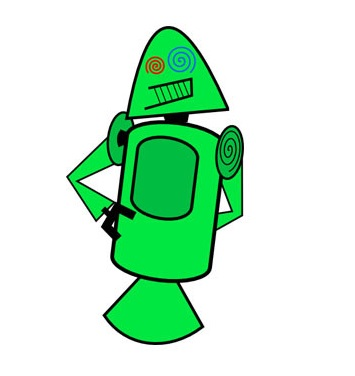

Android Inc. fue fundado en 2003 por Andy Rubin, Rich Miner, Nick Sears y Chris White con el objetivo de desarrollar "dispositivos móviles que están al corriente de la ubicación y preferencias del usuario".
En un principio la intención era desarrollar un sistema operativo avanzado para cámaras digitales, pero más tarde se cambió el foco al determinar que el mercado de las cámaras digitales no era lo suficientemente grande. Se redirigirían los esfuerzos a crear un sistema que pudiera competir con Symbian y Windows Mobile.
En 2005, Google compraba Android Inc y empezaba el desarrollo de una plataforma móvil basada en el kernel de Linux. La idea entonces era la de crear un sistema parecido al de BlackBerry, basado en teclado QWERTY. Entonces llegó el iPhone.
Si el móvil de Apple tenía pantalla táctil, el de Google no podía ser menos. Se cambiaron las especificaciones para incluir el uso de la pantalla táctil que sería complementada por botones físicos. Todos los engranajes de Android estaban sobre la mesa, a excepción del logo. Por suerte, la diseñadora Irina Blok creó el Andy / Bugdroid que todos conocemos, y es que el anterior diseño beta era un poco... regular.

El 23 de septiembre de 2008 se lanzaba el primer teléfono con Android, el HTC Dream / T-Mobile G1 y empezaba la carrera de versiones, subversiones y logos de postres que ha continuado hasta nuestros días.